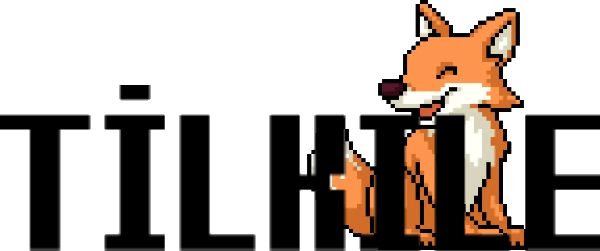
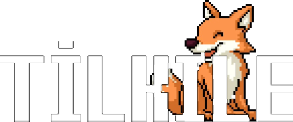

Canlar
Harfleri tahmin et, gizli kelimeleri çöz.


Tilkile'de amaç, tahtadaki gizli kelimeleri harf tahmin ederek mümkün olan en az kelimeyle tamamlamaktır. İşin tilkilik kısmı şu: tahmin ettiğin harf tahtadaki hiçbir kelimede yoksa, tahtaya yeni bir kelime eklenir — yani her yanlış, bulmacayı büyütür. Tahta sekiz kelimeye ulaşmışken bir yanlış daha yaparsan oyun kaybedilir; tüm kelimeleri tamamlarsan kazanırsın.
Günlük bulmaca ne zaman yenilenir? Her gün Türkiye saatiyle 00.00'da; geçmiş günler Arşiv modunda oynanabilir.
İstatistiklerim nerede? Serilerin ve oyun geçmişin yalnızca kendi cihazında saklanır — üyelik yok, veri gönderimi yok.